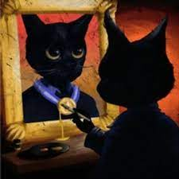

Máquina do Tempo

Lembro que um dia achei que triste era filme de drama
Que tu deita na cama e chora até esquecer
Achava que não tinha sentido o Heath Ledger morrer
Se tinha fama, tinha grana, então como ficar deprê?
Achava que o estrelato era sinal de alegria
Que ser visto era um milagre pra sorrir no fim do dia
Afinal se tá bem pago também tá bem de vida
Afinal se tá bem pago também..., hah, ah
Agora eu vejo que o cinеma é telão
Que a riqueza do filmе era só ficção, cadê o milagre então?
Tem dia que a vida dá dor no nosso coração
Mas se você perguntar vou falar que tá tudo bom
Tem dia que é colorida, tipo Wes Anderson
Às vezes é um dia cinza ouvindo Elton John
Às vezes é com a família em um restaurante bom
Às vezes falta família e também falta tom
Dá vontade de voltar pra quando eu via TV
Jogava PS2 com meus amigo' até o Sol descer
Saudade dos aniversário' que nóis' foi
Tinha prova na segunda, rodei e recupero depois
Responsa era nula, skate no meio da rua
Saudades das férias na praia, da madruga à luz da Lua
Quando foi que isso parou de acontecer?
Pelo amor de Deus, eu não pedi pra crescer
Máquina do tempo tá soando legal
Será que se eu voltasse faria tudo igual?
Mas não vale arrumar tudo que aconteceu
Se fosse diferente não seria eu
Máquina do tempo tá soando legal
Será que se eu voltasse faria tudo igual?
Mas não vale arrumar tudo que aconteceu
Se fosse diferente não seria eu
Máquina do tempo tá soando legal
Será que se eu voltasse faria tudo igual?
Mas não vale arrumar tudo que aconteceu
Se fosse diferente não seria eu
Máquina do tempo tá soando legal
Será que se eu voltasse faria tudo igual?
Mas não vale arrumar tudo que aconteceu
Se fosse diferente, se fosse diferente
Máquina do tempo tá soando legal (Ah, ah, ah)
Será que se eu voltasse faria tudo igual? (Ah, ah, ah)
Mas não vale arrumar tudo que aconteceu
Se fosse diferente não seria eu (Ah)
E eu pisquei em 2003
Quando acordei eu não vi mais vocês
Casas vazias, onde foi que eu parei?
Vinte anos depois me perdi de vez
E eu pisquei em 2003
Quando acordei eu não vi mais vocês
Casas vazias, onde foi que eu parei?
Vinte anos depois me perdi de vez
Na nostalgia
Melhor 'cê não se importar enquanto o tempo for passar